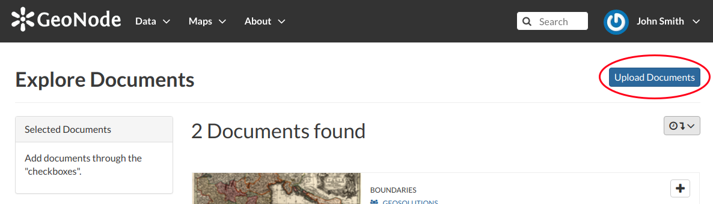
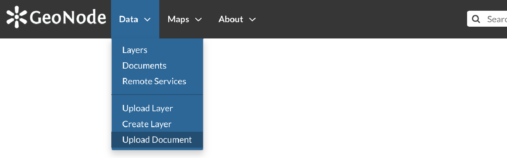
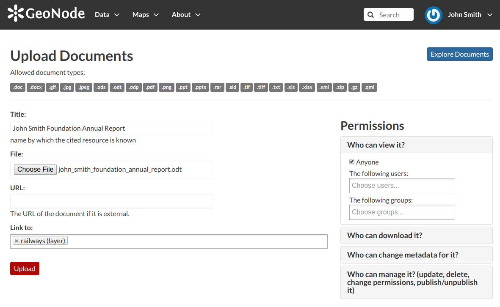

Uploading Documents¶
GeoNode allows to share reports, conceptual notes, posters, spreadsheets, etc. A wide range of documents files can be hosted on the platform, including text files (.doc, .docx, .txt, .odt), spreadsheets (.xls, .xlsx, .ods), presentations (.ppt, .pptx, .odp), images (.gif, .jpg, .png, .tif, .tiff), PDF, zip files (.rar, .zip, .gz), SLD, XML or QML files.
Warning
Only authenticated users can upload data into GeoNode.
Documents uploading is accessible from two positions:
the Upload Documents button of the Documents Search page (see Documents)
Documents Upload button
the Upload Document link of the Data menu in the navigation bar
Document Upload link
The Document Upload page looks like the one shown in the picture below.
Document Upload page
In order to upload a document:
- select a file from your disk or enter a URL address if the document is stored on the internet
- insert the title of the document
- select one or more published resources the document can be linked to (optional)
- click the red Upload button
At the end of the uploading process you will be driven to the Metadata page to fill out other information about the document. See the next section to know more about that.